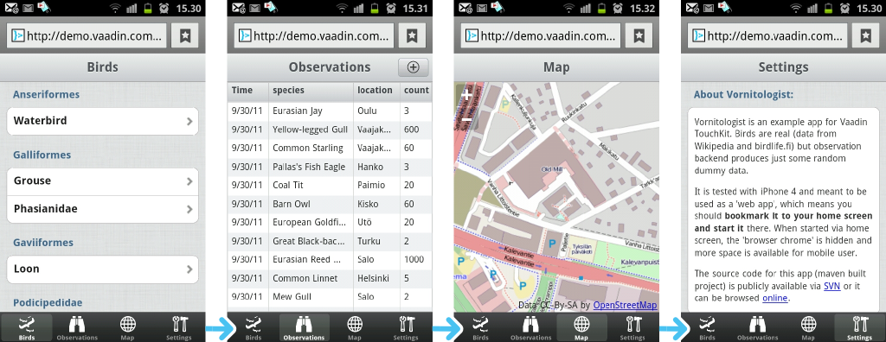
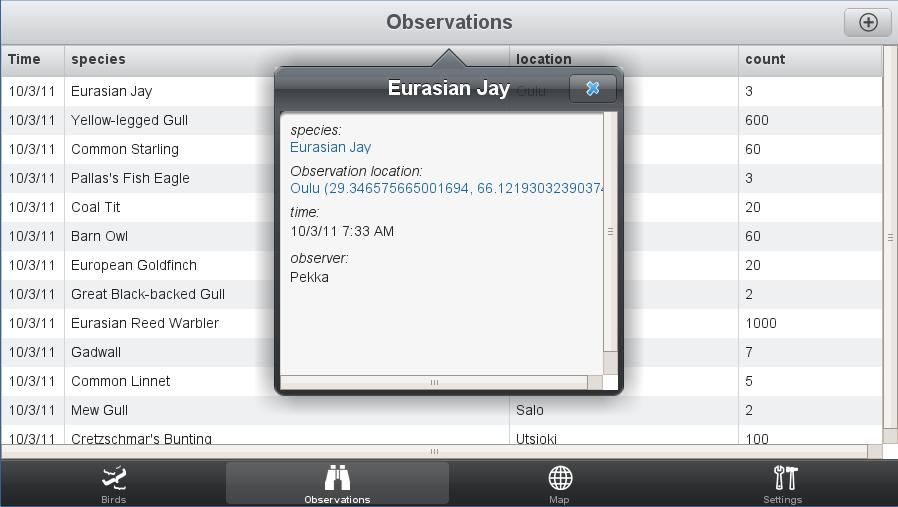

Vaadin TouchKit in Action
Matti Tahvonen
Marko Grönroos
In this tutorial, we introduce you to how the Vornitologist
demo app was built. We will not go through every step, but will discuss
the most essential parts from the perspective of TouchKit. You will be
familiarized with TouchKit features and can then continue to build your
own mobile web application.
While reading this article, you should prepare to import the Vornitologist project sources to your IDE for more detailed inspection and additional testing. Basic knowledge of Vaadin development is expected.

Vornitologist is a mobile web application for birdwatching.
The target device is a smartphone, such as iPhone, but the software can
also be used with, for example, tablet devices and even with desktop
browsers. With the demo app, birdwatchers can keep log of their
observations and share interesting data with each other. Believe it or
not, it is a fairly popular hobby in Finland. Although the example may
not seem exactly business-centric, it contains many of characteristics
common to most business apps.
The tutorial will go through the following tasks:
- Setting up a Vaadin project that uses TouchKit
- Configuring the application for mobile use: setting up home page icons, persistent session etc.
- Building top-level navigation for the application with TabBarView (a TabSheet optimized for touch interfaces)
- Discover some of the touch-UI-optimized form components provided by TouchKit, such as Switch, EmailField and NumberField.
- Setting up a NavigationManager to easily dig into bird species via the classification hierarchy
- Using NavigationViews in the NavigationManager
- Creating modal views to be displayed temporarily over the main view
- Using geolocation
- Adding a third-party add-on from the Vaadin Directory
- Building a widget set optimized for mobile devices
- Building a fallback view that can work without connection
to the server aka offline
mode
Setting up a TouchKit Project
In this tutorial we use Maven, but you can set up the project just as well as a regular Eclipse project.
Importing the Vornitologist Project
Before proceeding further, you should import the Vornitologist project to your favorite IDE. As the project is Maven-based, Eclipse users need to install the m2e (or m2eclipse for older versions) plugin to be able to import Maven projects, as well as Subclipse for making SVN access easier. Once they are installed, you should be able to import Vornitologist as follows:
-
Select File → Import
-
Select Maven → Check out Maven Project from SCM, and click Next.
-
In SCM URL, select svn and enter URL http://dev.vaadin.com/svn/demo/vornitologist/
-
Click Finish.
-
VornitologistApplication.java
-
VornitologistWidgetset.gwt.xml
-
web.xml
The Project Explorer in Eclipse organizes Java source files and libraries under the Java Resources and web application contents under the Web Resources virtual folder.
Browsing the Sources Online
If you do not wish to import the Vornitologist project, you can inspect the source code on-line at http://dev.vaadin.com/browser/demo/vornitologist.
Creating Your Own Project
Creating your own project from scratch is a simple. You can
choose to create it as a regular Vaadin project in Eclipse or as a
Maven project using a TouchKit-specific archetype. The latter makes the
most essential configuration for you automatically.
To create it as a Maven project in Eclipse:
-
Select File → New → Project
-
Select Maven → Maven Project and click Next
-
In New Maven Project step, just click Next
-
Type vaadin in the Filter field, press Enter, and wait for a while for the list to update
-
Select vaadin-archetype-touchkit and click Next
-
In Group Id, enter com.example or some other group ID
-
In Artifact Id, enter mytouchkitapp or some other group ID
-
Click Finish
-
Open the mytouchkitapp project in the Project Explorer
Deployment Descriptor
An application using TouchKit must use a special servlet that comes with the add-on. It replaces the normal ApplicationServlet in Vaadin. The maven archetype uses the servlet automatically. If you started your project with normal Vaadin Eclipse project, you must edit the web.xml file, which is located in WebContent/WEB-INF. You need to define the servlet class in web.xml as follows:
<servlet>
<servlet-name>Vaadin Application Servlet</servlet-name>
<servlet-class>
com.vaadin.addon.touchkit.server.TouchKitApplicationServlet</servlet-class>
The rest of the deployment descriptor is as usual, defining the UI class and the widget set.
<init-param>
<description>Vaadin UI class to start</description>
<param-name>UI</param-name>
<param-value>com.example.mytest.MyVaadinUI</param-value>
</init-param>
<init-param>
<description>Application widgetset</description>
<param-name>widgetset</param-name>
<param-value>com.example.mytest.gwt.AppWidgetSet</param-value>
</init-param>
</servlet>
As TouchKit contains both server- and client-side extensions, we use a project-specific widget set, which requires GWT compilation. TouchKit allows defining also a fallback widget set and application for non-touch devices. The fallback functionality is described later in this tutorial.
Defining the Widget Set
The widget set definition AppWidgetSet.gwt.xml
is automatically generated by the Maven archetype. If you have a
regular Eclipse project, Vaadin plugin for Eclipse should create the
widget set definition file for you.
<module>
<!--
This file is automatically updated based on new dependencies
by the goal "vaadin:update-widgetset".
-->
<!-- Inherit DefaultWidgetSet -->
<inherits name="com.vaadin.DefaultWidgetSet" />
<inherits name="com.vaadin.addon.touchkit.gwt.TouchKitWidgetSet" />
</module>
If you use Maven and add any add-on components containing a widget set later, you need to update the project widget set with “mvn vaadin:update-widgetset” and recompile it with “mvn vaadin:compile”.
The UI Class (former Application class)
An ui (application) using TouchKit must extend TouchKitUI instead of the regular UIclass in Vaadin. In Vornitologist, this is defined in the com.vornitologist.VornitologistUI.java file.
public class VornitologistUI extends TouchKitUI {
****** BADLY OUTDATED CONTENT BELOW:
The initialization of the ui is done in the init() method, as usual. However, you must use the special TouchKitWindow for the main window, instead of the regular Window. In Vornitologist, we configure the window in a dedicated method.
private TouchKitWindow mainWindow;
@Override
public void init() {
// Custom configurations (app icons etc) for main window need
// to be set eagerly as they are written on the "host page".
ConfigureMainWindow();
setTheme("vornitologist");
// Set a nice default for user for demo purposes
setUser("Eräjorma"); // Willy Wilderness, Skogsbörje
}
The configuration of the main window is described a bit later.
Configuring the Touch Device Experience
TouchKit makes it possible to integrate the Vaadin web application with the mobile user interface in iOS and to some extent also in Android. You can do the following settings:
-
Set an application icon, which is shown in the home screen
-
Set a startup icon which is shown as a splash screen when the application starts (iOS only)
-
Use web app capable mode to run the application full-screen without location bar (iOS only)
-
Use persistent session cookie to preserve the application state over closing and restarting the application in the device
-
Disable session expiration message (auto reload)
These features should be set up before window is first loaded by client like in the init() method. In Vornitologist, they are done in the constructor of the VornitologistWindow as follows:
addApplicationIcon(VornitologistApplication.get().getURL()
+ "VAADIN/themes/vornitologist/icon.png");
setStartupImage(VornitologistApplication.get().getURL()
+ "VAADIN/themes/vornitologist/startup.png");
setWebAppCapable(true);
setPersistentSessionCookie(true);
The normal session expiration message is not as suitable for mobile devices as it is for desktop browsers, so it is better to simply reload the application automatically. This is done in the application class of Vornitologist as follows:
/**
* Make application reload itself when the session has expired. Our demo app
* gains nothing for showing session expired message.
* * @see TouchKitApplication#getSystemMessages()
*/
public static SystemMessages getSystemMessages() {
return customizedSystemMessages;
}
static CustomizedSystemMessages customizedSystemMessages =
new CustomizedSystemMessages();
static {
customizedSystemMessages.setSessionExpiredNotificationEnabled(false);
}
Global Access to Session Data
TouchKit includes an implementation of the ThreadLocal Pattern to make it easier to access data global in a user session, such as locale data. The getApplication(), getWindow(), and getLocale() methods available in all Vaadin components can be used to access such data, but they do not work before the components are attached, most notably in the constructors. Using static variables for session-global data does not work, because they are shared by all users of the servlet. You can get a thread-local instance of the application object with the static get() method defined in TouchKitApplication. The method can then be used anywhere, such as in the MainTabsheet as follows:
ResourceBundle tr = Translations.get(VornitologistUI.getApp().getLocale());
To avoid casting to your application class, you can define a cast method such as the following in Vornitologist:
public static VornitologistUI getApp() {
return (VornitologistUI) get();
}
The ThreadLocal Pattern is explained in detail in the Section: ThreadLocal Pattern in Book of Vaadin.
Building Top-Level Navigation for the Vaadin UI
The user interface is initialized in the ui class when the Vaadin calls its init(WrappedRequest request) method. In the ui initialization you might want an access to screen dimensions of your device. That is possible with the Vaadin Page class like below.width = Page.getCurrent().getBrowserWindowWidth();
height = Page.getCurrent().getBrowserWindowHeight();
isVertical = width>height;
You can use that information to give different user interfaces in, for example, mobile phones and tablets. Implementing the BrowserWindowResizeListener and adding it into the current Page lets you to detect the device orientation change.
Page.getCurrent().addBrowserWindowResizeListener(this);
When user rotates the device e.g. from landscape to vertical position, the browserWindowResized() method is called, where it is possible see the device orientation with BrowserWindowResizeEvent's getHeight() and getWidth() methods.
Vornitologist does it simple and gives just one user interface, but you can check out the MobileMail application for the same part if you wish to optimize your UI for different sized devices.
MainTabsheet Class
This is the main view of the application. It extends the
TouchKit TabBarView component that has a tab bar at
the bottom of the screen.
The MainTabsheet provides navigation between applications main views. The main views are:
-
ClassificationHierarchy
-
LatestObservations
-
MapView
-
SettingsView
The constructor of MainTabSheet initializes man views. If you wish to save memory or CPU, you might wish to create views lazily.
ResourceBundle tr = Translations.get(VornitologistUI.getApp().getLocale());
/**
* Populate main views
*/
classificationHierarchy = new ClassificationHierarchy();
Tab addTab = addTab(classificationHierarchy);
addTab.setIcon(new ThemeResource("linegraphics/bird.png"));
addTab.setCaption(tr.getString("Aves"));
latestObservations = new LatestObservations();
addTab = addTab(latestObservations);
addTab.setIcon(new ThemeResource("linegraphics/binocular.png"));
addTab.setCaption(tr.getString("Observations"));
mapView = new MapView();
addTab = addTab(mapView);
addTab.setIcon(new ThemeResource("linegraphics/world.png"));
addTab.setCaption(tr.getString("Map"));
SettingsView settings = new SettingsView();
addTab = addTab(settings);
addTab.setIcon(new ThemeResource("linegraphics/tools.png"));
addTab.setCaption(tr.getString("Settings"));
/**
* Make settings view as the default. This would not be best option for
* a real application, but it also serves as our demos welcome page.
*/
setSelectedTab(settings);
Building User Interfaces with TouchKit
You can build web applications with TouchKit mostly like with
regular Vaadin. All standard Vaadin components are there and most of
them support touch devices. TouchKit includes a number of new
components that are optimized for touch user interfaces. TouchKit also
provides a theme that makes standard Vaadin components more usable on
touch devices.
SettingsView
The SettingsView, defined in the com.vornitologist.ui package,
acts as a welcome view and as a configuration view where the user can
change the user name, age, and other settings. It extends NavigationView.
NavigationViews are commonly used inside a NavigationManager,
but it can also be used as a plain layout component as we do here. The SettingsView
demonstrates several of the special components in TouchKit: VerticalComponentGroup,
NumberField, EmailField
and Switch. Notice that most components in this
view are not actually hooked to the application logic, but are mostly
just for demonstrating component usage.
public class SettingsView extends NavigationView {
@Override
public void attach() {
super.attach();
buildView();
}
private void buildView() {
ResourceBundle tr = Translations.get(getLocale());
setCaption(tr.getString("Settings"));
The view is not initialized in the constructor, but lazily in
the attach() method. Lazy initialization can be a
good pattern due to several reasons. First, not much memory is reserved
before it is really needed. Also, for example, the component-specific
locale that you can get with getLocale() falls back
to application locale once the component is actually attached. Notice
that you could also get the application locale from the ThreadLocal as
we did in the MainTabsheet
initialization.
The normal CSSLayout is used as a root layout for the view. It is a fast layout to render, which is especially important in mobile browsers, and easy to theme with CSS.
CssLayout content = new CssLayout();
...
content.addComponent(componentGroup);
...
setContent(content);
The settings view uses the VerticalComponentGroup extensively. It is a layout component with a box around the grouped components and a caption above the box. The components are separated with a line.
componentGroup = new VerticalComponentGroup();
componentGroup.setCaption("Settings");
componentGroup.addComponent(new Label(
"Others but language setting here is just to demonstrate widgets."));
componentGroup.addComponent(new TextField("Username"));
NumberField age = new NumberField("Age");
age.setWidth("100%");
componentGroup.addComponent(age);
Switch switch1 = new Switch("Use my location");
switch1.setValue(true);
componentGroup.addComponent(switch1);
switch1 = new Switch("Alerts");
componentGroup.addComponent(switch1);

There is also an equivalent HorizontalButtonGroup for horizontal grouping of Buttons.
In addition to the new touch components, the TouchKit theme gives a new look for many of the standard components in Vaadin. For example, look at the Table in the LatestObservations class (and view). Rows are styled higher than with standard Vaadin so users have a better change to hit the row the wanted.
Using NavigationManager to Explore Hierarchical Data
TouchKit provides a way similar to table
views in iOS for navigating hierarchical data. The pattern is
based on NavigationManager tha provides navigation
between views with animations. NavigationManager
also helps with managing "breadcrumps", so that users can easily
navigate up in the hierarchy. NavigationManager
is a nice component for digging into hierarchical structures.
Vornitologist displays the taxonomy of birds from orders to species. The species are represented as a simple bean class ClassificationItem with name and parent properties. The classification is represented as a ClassificationGroup bean, which additionally has a children property.

The Birds view is implemented as ClassificationHierarchy that extends NavigationManager. It manages ClassificationGroupViews that display a taxonomy group and SpeciesView to display a species. When first created, the manager displays the top-level hierarchy view.
public class ClassificationHierarchy extends NavigationManager {
/**
* Creates a classification hierarchy displaying the birds classification
* group in the top level view
*/
public ClassificationHierarchy() {
navigateTo(new ClassificationGroupView(getBirds(), true));
}
The ClassificationGroupView is bound to a ClassificationGroup as follows:
public class ClassificationGroupView extends NavigationView {
private ClassificationGroup group;
...
The ClassificationGroupView can use VerticalComponentGroups to group two levels of classification in one view as we do on the top level.
VerticalComponentGroup componentGroup = new VerticalComponentGroup();
componentGroup.setCaption(names.getString(classificationItem.getName()));
// Iterate over sub-groups
ClassificationGroup subgroup = (ClassificationGroup) classificationItem;
for (ClassificationItem subitem : subgroup.getChildren()) {
componentGroup.addComponent(new ItemNavigationButton(
subitem, names.getString(subitem.getName())));
}
layout.addComponent(componentGroup);
The hierarchy navigation is done using NavigationButton components, which are added to the vertical component groups.
NavigationButton navigationButton = new ItemNavigationButton(
classificationItem, names.getString(classificationItem.getName()));
layout.addComponent(navigationButton);
Vornitologist extends the NavigationButton to handle view changes in a click listener:
static class ItemNavigationButton extends NavigationButton implements
NavigationButtonClickListener {
private ClassificationItem item;
public ItemNavigationButton(ClassificationItem item, String localizedName) {
addClickListener(this);
this.item = item;
setCaption(localizedName);
}
public void buttonClick(NavigationButtonClickEvent event) {
if (item instanceof ClassificationGroup) {
getNavigationManager().navigateTo(
new ClassificationGroupView((ClassificationGroup) item));
} else {
getNavigationManager().navigateTo(new SpeciesView(item));
}
}
}
NavigationButton
is a special kind of Button
that works nicely together with NavigationManager.
When clicked, it starts the view change animation immediately on the
client-side before making a server-side request. This makes the user
interface feel very responsive, even if the new view is heavy to load
or there is some latency in communication due to a slow network. NavigationView
automatically configures one NavigationButton
as the "back button" when it is used inside a NavigationManager.
Clicks in a NavigationButton can
be handled with a NavigationButtonClickListener,
but it can also be coupled with a target view when used as a "Back"
button. In the
ItemNavigationButton in Vornitologist, we use again NavigationButtonClickListener in
which we lazily instantiate the target view and then call getNavigationManager().navigateTo(Component).
This way, we save a lot of memory as views for various classification
groups and species do not need to be created until they really
accessed.
Even when used in this manner, using NavigationButton
together with NavigationManager,
it can give instant feedback to the user and start the view change
animation immediately. If the next view is not prepared beforehand (and
sent to client), the client uses a "fake navigation view" with a
caption of the NavigationButton.
When the transition is ready, the server round trip is also most likely
done and then the real view can be displayed. The view change is smooth
and feels responsive also when used in this way.
Using Geolocation with a Map Add-on from the Vaadin Directory
While you can sometimes survive with the basic components in
Vaadin and TouchKit, you often need something more. The Vaadin
Directory with hundreds of add-ons is there for you. Using Vaadin
add-ons with TouchKit project is just the same as with standard Vaadin
apps. Most add-ons can be used with touch devices as well, but some may
use technologies like Flash that do not work well with mobile devices.
Also, you have to notice that some rare add-ons require you to incorporate a custom servlet implementation. As TouhcKit itself already has a custom servlet, using this kind of add-ons may be difficult or even impossible. In some cases, you may be able to combine the features of such custom servlets into your own custom servlet implementation that also includes the TouchKit servlet functionality.
In Vornitologist, we use the OpenLayers Wrapper to visualize bird observations on a map. Its slippy map implementation is optimized for touch devices and especially for devices that suppor multitouch events, such as iOS and the latest Android versions. As Vornitologist is a Maven project, installing an add-on simply requires defining a dependency. The dependency is defined in the pom.xml file.<dependencies>
...
<dependency>
<groupId>org.vaadin.vol</groupId>
<artifactId>openlayers-wrapper</artifactId>
<version>2.0.0</version>
</dependency>
As the add-on contains a custom widget set, it needs to be inherited in the VornitologistWidgetSet.gwt.xml widget set definition file. Normally, the project widget set definition file is automatically generated from the widget sets found from the classpath. Vornitologist needs to have it manually edited because of some additional definitions. For the OpenLayers Wrapper we need to include the actual OpenLayers JavaScript library in addition to the widget set.
<script src="OpenLayers.js"></script>
<inherits name="org.vaadin.vol.VolWidgetset" />
OpenLayers Wrapper provides a GWT module that would include a
hosted version of OpenLayers scripts, but we have also included a
stripped-down version of the OpenLayers JavaScript library to save some
bytes the client needs to download.
After modifying the widget set definition file, you need to recompile
the widget set with “mvn vaadin:compile”
goal. The add-on can be used with the simple Java API. The MapView
populates a vector layer containing markers of the latest observations.
public class MapView extends NavigationView implements PositionCallback,
VectorSelectedListener {
public static StyleMap STYLEMAP_BIRD_MARKER;
private OpenLayersMap openLayersMap;
private double latestLongitude;
private double latestLatitude;
private VectorLayer markerLayer = new VectorLayer();
Using Geolocation
Vornitologist uses the geolocation feature in TouchKit to display a map of the area where the user is currently located. The map is overlaid with observations. Observation data becomes much more interesting once you can see observations that are close to you. There are birdwatchers who quit their working day if a rare species is spotted nearby.

Using Popover to Display a Temporary View
The Popover component in TouchKit is a
special kind of sub-window that can be positioned relative to a
specific component. How the sub-window is actually displayed also
depends somewhat on, for example, the device size. It may render
differently in smartphones and tablets.

In Vornitologist, Popover is used in the LatestObservations view by extending Popover as ObservationDetailPopover.
public class ObservationDetailPopover extends Popover {
public ObservationDetailPopover(final Observation o) {
setClosable(true);
setModal(true);
setWidth("350px");
setHeight("65%");
As pop-up windows easily take all of the screen space available in a mobile phone, they are more useful in tablets.

Popover
can also be made full-screen. In the full-screen mode, it does not show
the window border or caption and covers the screen completely. The
full-screen mode may be useful for displaying a temprory view over a
main view. For an example of the full-screen usage, see how the SpeciesView opens a Popover with AddObservationView.
Displaying an Alternate User Interface for Unsupported Browsers
*** CONTENT BELOW IS TO BE CHANGED:
TouchKit
is designed for mobile browsers and supports currently only
WebKit-based browsers at the moment. WebKit-based desktop browsers,
such as Safari and Chrome, can be used for testing.
A TouchKit user interface will not work in non-WebKit browsers. To make
the application working for such users, you can define a fallback
ui and widget set. These are defined with the fallbackApplication and fallbackWidgetset parameters in web.xml.
...
<!-- Also configure fallback app + widgetset for non webkit browsers -->
<init-param>
<description>Vaadin fallback application class to start</description>
<param-name>fallbackApplication</param-name>
<param-value>com.vornitologist.VornitologistFallbackApplication</param-value>
</init-param>
<init-param>
<description>Application widgetset</description>
<param-name>fallbackWidgetset</param-name>
<param-value>com.vaadin.terminal.gwt.DefaultWidgetSet</param-value>
</init-param>
</servlet>
The fallback application can be a regular Vaadin application, a “Sorry!” message, or a redirection to an alternative user interface.
Building an Optimized Widget Set
Mobile networks are generally somewhat slower than DSL Internet connections. When starting a Vaadin application, the widget set is the biggest resource that needs to be loaded in the browser. As most of the Vaadin components are not used by most applications, especially mobile ones, it is beneficial to create an optimized version of the widget set.
Vaadin supports lazy loading of individual widget
implementations when they are needed and using the TouchKitWidgetSet
optimizes the widgetset to only download most essential widgets first
and then load other widget implementation lazily. This is good
compromise for common TouchKit apps. Because of high latency typical in
mobile networks, it still might not be the best solution for every
case. In Vornitologist we will take bit further and totally strip away
all unecessary widgets. We will create a monolithic but small widgetset
that together with proper gzip compression is lightweight for mobile
browsers.
To fine-tune the widgetset we use a custom WidgetMapGenerator implemmentation. It is defined in the com.vornitologist.widgetset.VornitologistWidgetset.gwt.xml file as follows:
<generate-with class="com.vornitologist.widgetset.WidgetMapGenerator">If you look at the com.vornitologist.widgetset.WidgetMapGenerator class, you can see that the overridden getLoadStyle() method returns the load style for the component connectors to be loaded. Lots of largish component implementations can be left to be loaded lazily (i.e. they are loaded if and only when they needed to be rendered). The list of used components can be built manually or one can e.g. use debugger to dig into CommunicationManager class that has opened all views of the app. It then contains a set of all components that have been used. The getLoadStyle() method is used to return the widget loading style, which is EAGER in Vornitologist to get the monolithic widgetset of all really needed widgets. The monolithic widgetset might sound as a weird idea, but it appears to be faster that way since in the mobile networks the latencies are often large but trasfer speed itself is typically rather high.
<when-type-is class="com.vaadin.terminal.gwt.client.WidgetMap" />
</generate-with>
public class WidgetMapGenerator extends TouchKitWidgetMapGenerator {
public WidgetMapGenerator() {
eagerWidgets = new ArrayList<Class<? extends ServerConnector>>();
eagerWidgets.add(SwitchConnector.class);
eagerWidgets.add(EmbeddedConnector.class);
eagerWidgets.add(NumberFieldConnector.class);
eagerWidgets.add(EmailFieldConnector.class);
...
@Override
protected LoadStyle getLoadStyle(
Class<? extends ServerConnector> paintableType) {
if (eagerWidgets.contains(paintableType)) {
return LoadStyle.EAGER;
} else {
return super.getLoadStyle(paintableType);
}
}
Note, that enabling gzip compression for your deployment is an
essential part if you wish to optimize your startup time and minimize
the amount of transferred data. The best method for doing this highly
depends on your hosting setup so we do not cover this in this tutorial.
Creating an Offline Mode for "Outback Access"
Consider that you are a typical end user of Vornitologist, an ornitologist yourself, and you travel to the middle of Australia for a bird watching trip. Although modern mobile networks cover most places nowadays, the network still is not always reachable. The "Java only on the server-side" architecture of Vaadin is great for improving the productivity of developers, but it has a problem if the server-side is not there.
Despite the server-centric approach of Vaadin and TouchKit, there is a method to build parts of the user interface so that it can work offline. TouchKit creates a so-called HTML5 cache manifest to instruct browsers to cache resources stronger than usual. Using these resources, an application can start up without any connection to network. By default, if the connection is down, only a dialog stating the situation is displayed. This "off-line application" can easily be overridden with a custom offline mode written with plain GWT code.
Let us consider a simple offline mode for Vornitologist that you can use to add observations of birds. Observations are stored temporarily in the HTML5 local storage until the server connection is up again. At that point, the application asks whether the user wishes to synchronize observations from local storage to the server.

Using the offline mode, we can gain offline use for a critical feature, while still keeping the "cost" of the application down due to the superior developer productivity of Vaadin. Most other features would be somewhat handicapped in offline mode anyway. For example, it might be impractical to store all observation in the local storage of mobile devices and it would be impossible to receive new observations near you without access to shared data on the server.
Note that if you end up doing an offline app, you will be working in the "real web development", which is a rare and fragile area to work in. In this area, Vaadin can no longer shield you from the difficulties of web development and, for example, all goodies of Java JVM are no more available. Consider making some compromises to keep your development costs down. Yet, you do have a good starting point for this advanced territory, as Vaadin uses GWT for the client-side development and the offline mode of TouchKit uses the same environment. We consider GWT to be the easiest method for doing serious browser development.
Enabling Offline Mode
To replace the default offline mode of TouchKit, create a class that extends com.vaadin.addon.touchkit.gwt.client.TouchKitOfflineApp. It needs to sit in the "client" sub-package next to the widget set definition file of your application. You will also need to add a rebinding rule to widget set such as the following:
<replace-with class="com.vornitologist.widgetset.client.VornitologistOfflineMode">
<when-type-is class="com.vaadin.addon.touchkit.gwt.client.TouchKitOfflineApp" />
</replace-with>
There are several methods (see the JavaDocs) that you may wish to override depending on your requirements. In Vornitologist, we override buildDefaultContent(), onlineApplicationStarted(), and deactivate().
The buildDefaultContent() is the basic method that builds the user interface of the offline view. The Vornitologist offline mode uses many client-side components of Vaadin and TouchKit to achieve similar look and feel with the rest of the Vaadin app. Any GWT widgets and methods can also be used.
The onlineApplicationStarted() method is called by the client-side when it is able to open connection to the server. The Vornitologist offline mode checks the status of the locally stored observations and suggests to send them to the server.
For synchronizing observations to server, Vornitologist uses the normal Vaadin communication mechanism of the main window object. On the server-side, the VornitologistWindow detects posted observations and stores them to a data structure shared by all users. You can also use any other method to post the data collected offline to the server, for example, using a separate servlet.
The deactivate() method is called by the client-side when the server is reachable again. Vornitologist overrides this method to disable the automatic closing of the offline mode. This way filling a new observation is not interrupted if the connection is suddenly restored. Instead, we return to online mode programmatically when the user is ready.
Project Organization
The offline mode of Vornitologist is written mostly in the VornitologistOfflineMode class. If your offline mode grows large, you should use common Java patterns to keep you code clean. If you want to have an example of using HTML5 local storage usage, please see the com.vornitologist.widgetset.client.OfflineDataService class. In addition to handling locally stored observations, the service class also provides a list of Species objects for the user interface, which it reads with an XHR from a cached flat file.
Camera Support via Upload
Vornitologist supports mobile devices' cameras via Upload functionality. Upload Image functionality of the Vornitologist is in the AddObservationView class. You could upload the photo of a bird and attach it into your a bird observation. The UploadImageScaler receives image from the device to the server side of the application. It also scales the images such that the maximum width of the image is 300 pixels.UploadImageScaler uploader = new UploadImageScaler();
imageUpload = new Upload("Upload image", uploader);
imageUpload.setImmediate(true);
imageUpload.addSucceededListener(uploader);
...
uploader.setListener(new UploadImageScaler.ScalingDoneListener() {
public void onFileScaled(final File file) {
file.deleteOnExit();
observation.setImage(file.getAbsolutePath());
image.setSource(new FileResource(file));
}